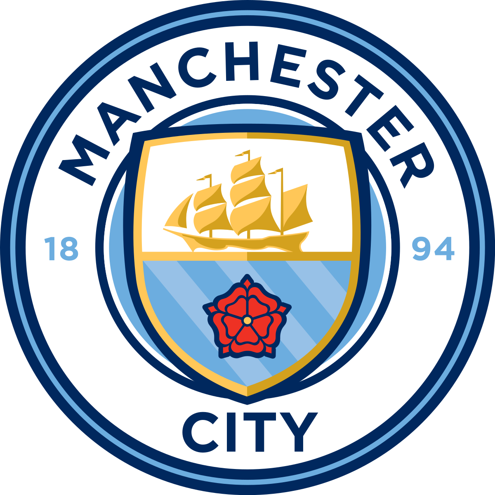

1 - 0

Data: 29 aprile 2025
Stadio: Emirates Stadium, Londra
Competizione: Premier League - Giornata 34
Marcatore
- ⚽ Gabriel Jesus (67’)
Analisi della partita
Grande vittoria per l’Arsenal che batte il Manchester City con un gol di Gabriel Jesus nella ripresa. La squadra di Arteta ha mostrato solidità difensiva e grande intensità a centrocampo, neutralizzando le principali fonti di gioco del City.
Prestazione decisiva anche di Ramsdale tra i pali, autore di alcune parate fondamentali. Con questi tre punti, l’Arsenal continua a inseguire il sogno del titolo.